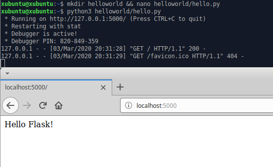

Python Flask
03.03.2020, Kristian KoponenMuokattu, 08.03.2020
Tehtävänanto
Linux-palvelimet h5
- Hello Flask! Tee Python Flask "hei maailma" kehitysympäristössä.
- Tuotanto-Flask. Tee tuotantotyyppinen asennus Flaskista käyttäen Apachen WSGI-modulia. Kokeile, että pystyt muokkaamaan koodia ilman sudoa ja saat uuden version käyttöön käynnistämättä Apachea uudelleen.
- Lisää tuotanto-Flaskiin muotit (templates).
- Sun IP. Tee Flask-sivu, jolla näkyy tietoja käyttäjästä. Esimerkiksi request.user_agent.string, request.remote_addr. Muista "from flask import request".
Käytetyt laitteet
Lenovo ThinkPad X220
| Prosessori: | Intel(R) Core(TM) i5-2540M @ 2.60Ghz |
|---|---|
| Keskusmuisti: | 4GiB 1333Mhz DDR3 |
| Näytönohjain: | Intel HD Graphics 3000 |
| Käyttöjärjestelmä: | Windows 10 64-bit |
SanDisk Ultra USB 3.0 32 GB
xubuntu 18.04.3 amd64 -liveHello Flask!
Asennetaan Flask web framework komennolla
$ sudo apt-get update && sudo apt-get install python3-flask -y
Luodaan käyttäjän kotihakemistoon uusi kansio ja lisätään tekstitiedosto komennolla
$ mkdir helloworld && nano helloworld/hello.py
from flask import Flask
app = Flask(__name__)
@app.route("/")
def hello():
return "Hello Flask!"
app.run(debug=True)
Käynnistetään sovellus komennolla
$ python3 helloworld/hello.py
Käydään katsomassa sovellus selaimella osoitteessa localhost:5000
{kind=link}
Tuotanto-Flask
Muokattu 08.03.2020 (Korjaus)
Alkutoimet
Asennetaan apache.
$ sudo apt-get update && sudo apt-get -y install apache2
Korvataan apachen oletussivun sisältö ja testataan, että apache on käynnissä.
$ echo "Apache toimii"|sudo tee /var/www/html/index.html
$ curl localhost
{kind=link}
Luodaan uusi käyttäjä sovellukselle.
$ sudo adduser flaskwsgi
Tällä käyttäjällä ei tarvitse kirjautua sisään, lukitaan salasanakirjautuminen.
$ sudo usermod --lock flaskwsgi
Lisätään oma käyttäjä uuden käyttäjän ryhmään flaskwsgi
$ sudo adduser xubuntu flaskwsgi
Kirjaudutaan ulos ja takaisin, jotta ryhmä tulee aktiiviseksi.
Virtual Host
Asennetaan python3 WSGI-moduuli ja käynnistetään apache uudelleen.
$ sudo apt-get install libapache2-mod-wsgi-py3
$ sudo systemctl restart apache2
Luodaan virtual host python flaskille
$ sudoedit /etc/apache2/sites-available/flaskwsgi.conf
<VirtualHost *:80>
ServerName flask.example.com
WSGIDaemonProcess flaskwsgi user=flaskwsgi group=flaskwsgi threads=5
WSGIScriptAlias / /home/flaskwsgi/public_wsgi/flask.wsgi
<Directory /home/flaskwsgi/public_wsgi/>
WSGIScriptReloading On
WSGIProcessGroup flaskwsgi
WSGIApplicationGroup %{GLOBAL}
Require all granted
</Directory>
</VirtualHost>
Aktivoidaan uusi flaskwsgi.conf tiedosto ja deaktivoidaan oletuskonfiguraatio.
$ sudo a2ensite flaskwsgi.conf
$ sudo a2dissite 000-default.conf
Tarkistetaan konfiguraatiotiedosto.
$ apache2ctl configtest
Syntax OK
Käynnistetään taas apache uudelleen.
$ sudo systemctl restart apache2
Hakemiston ja tiedostojen luonti
Testataan tässä välissä mitä on saatu aikaan.
$ curl localhost
$ tail -1 /var/log/apache2/error.log
{kind=link}
Saadaan 403-virhe. Tämä johtuu konfiguraatio-tiedostossa viitatun kansion puuttumisesta, joten luodaan kyseinen kansio.
$ sudo mkdir /home/flaskwsgi/public_wsgi
Nyt on luotu hakemisto sovellukselle, mutta se on käyttäjän flaskwsgi hakemistossa. Jotta voidaan muokata tiedostoja ilman pääkäyttäjän lupaa ja hyötyä siitä että oma käyttäjä on flaskwsgi ryhmässä, muokataan luvat kansiolle
$ sudo chown flaskwsgi:flaskwsgi /home/flaskwsgi/public_wsgi
$ sudo chmod g=rwxs /home/flaskwsgi/public_wsgi
Tarkastetaan luvat
$ ls -ld /home/flaskwsgi/public_wsgi
drwxrwsr-x 2 flaskwsgi flaskwsgi 40 Mar 3 21:43 /home/flaskwsgi/public_wsgi
Kokeillaan uudestaan
$ curl localhost
$ tail -1 /var/log/apache2/error.log
{kind=link}
Tällä kertaa tulee 404-virhe, joka taas johtuu puuttuvasta WSGI-tiedostosta. Luodaan uusi tekstitiedosto, joka voidaan nyt tehdä ilman sudoa
$ nano /home/flaskwsgi/public_wsgi/flask.wsgi
import sys
assert sys.version_info.major >= 3, "Python-versio liian vanha tiedostossa flask.wsgi"
sys.path.insert(0, '/home/flaskwsgi/public_wsgi/')
from hello import app as application
Testataan jälleen kerran mitä tapahtuu.
$ curl localhost
$ tail -1 /var/log/apache2/error.log
{kind=link}
Nyt saadaan virhe 500 "internal server error", joka johtuu puuttuvasta moduulista 'hello'. Kopioidaan aiemmassa harjoituksessa luotu hello.py xubuntun hakemistosta uuden projektin hakemistoon.
$ cp helloworld/hello.py /home/flaskwsgi/public_wsgi/
Muokataan tiedostosta kohta "app.run(debug=True)" pois. Tätä ei tuotantokelpoisessa tuotteessa tarvita, ja debug-toiminto on turvallisuusriski.
$ nano /home/flaskwsgi/public_wsgi/hello.py
from flask import Flask
app = Flask(__name__)
@app.route("/")
def hello():
return "Hello, production Flask!\n"
Lopputulos
Tarkastetaan lopputulos konsolilla ja Firefoxilla.
$ curl localhost
{kind=link}
Flask-muotit
Luodaan templates-kansio projektin hakemistoon.
$ cd /home/flaskwsgi/public_wsgi
$ mkdir templates
Muokataan hello.py tiedostoa. Muutokset keltaisella.
$ nano hello.py
#!/usr/bin/python3
"Return HTML templated page"
from flask import Flask, render_template
app = Flask(__name__)
@app.route("/")
def templated():
return render_template("base.html", greeting="Hello Templates!")
Luodaan muotti templates-kansioon
$ nano templates/base.html
<!DOCTYPE html>
<html>
<head>
<title>Hello Templates</title>
<meta charset="utf-8">
</head>
<body>
<h1>{{ greeting }}</h1>
<p>
Template toimii
</p>
</body>
</html>
Otetaan uusi versio käyttöön ja kokeillaan
$ touch flask.wsgi
{kind=link}
Tietoja käyttäjästä
Muokataan tiedostoa hello.py. Tuodaan request-metodi ja lisätään muuttujat IP-osoitteelle ja selaintiedoille. Muutokset keltaisella.
$ nano hello.py
#!/usr/bin/python3
"Return HTML templated page"
from flask import Flask, render_template, request
app = Flask(__name__)
@app.route("/")
def templated():
return render_template("base.html",
greeting="Hello Templates!",
IP=request.remote_addr,
userAgent=request.user_agent.string)
Muokataan base.html -muottia vastaanottamaan muuttujien arvot. Muutokset keltaisella.
$ nano templates/base.html
<!DOCTYPE html>
<html>
<head>
<title>Hello Templates</title>
<meta charset="utf-8">
</head>
<body>
<h1>{{ greeting }}</h1>
<p>
Template toimii
</p>
<p>IP-osoitteesi:<br>{{IP}}</p>
<p>Selaimesi:<br>{{userAgent}}</p>
</body>
</html>
Otetaan uusi versio käyttöön ja kokeillaan
$ touch flask.wsgi
{kind=link}